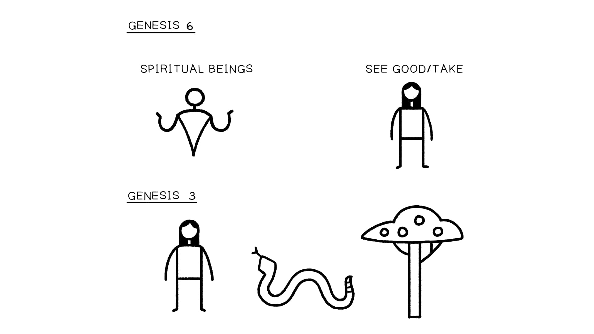

Sessão 7: O Design de Gênesis 6:1-12Session 7: Design of Genesis 6:1-12
Principais AprendizadosKey Takeaways
A história do dilúvio começa detalhando a corrupção da humanidade e da terra, delineando tanto uma rebelião celestial quanto uma rebelião terrena como a fonte desta corrupção.The flood story begins by detailing the corruption of humanity and the land, outlining both a heavenly rebellion and an earthly rebellion as the source of this corruption.
Gênesis 6:1-12 usa palavras e frases repetidas de Gênesis 1-3 para contrastar a boa criação de Deus contra a agora arruinada terra e para comparar a rebelião dos humanos com a rebelião dos filhos de Elohim.Genesis 6:1-12 uses repeated words and phrases from Genesis 1-3 to contrast God's good creation against the now ruined land and to compare the rebellion of the humans with the rebellion of the sons of Elohim.
O retrato da ira de Deus em Gênesis 6 é o de um Deus de coração quebrado que entrega a criação às consequências da rebelião humana e cósmica.The picture of God's wrath in Genesis 6 is one of a brokenhearted God who hands creation over to the consequences of human and cosmic rebellion.
Rebelião Cósmica no Tempo de Noé (Gn 6:1-12)Cosmic Rebellion in the Time of Noah (Gen. 6:1-12)
A história do dilúvio começa com duas histórias alinhadas que focam na corrupção da "humanidade" (האדם) na "terra" (הארץ). Esta corrupção vem de duas fontes, consideradas separadamente. 1. Uma rebelião celestial que leva a uma união ilícita de seres espirituais e humanos, levando ao nascimento de guerreiros violentos. 2. Uma rebelião terrena de humanos corruptos cujo mal causa violência que contamina a terra. Em ambas as unidades, há uma narrativa descrevendo o mal trágico (6:1-2 e 6:5) que leva a uma fala divina sobre a resposta de Yahweh (6:3 e 6:6-7).The flood story begins with two aligned stories that focus on the corruption of "humanity" (האדם) in "the land" (הארץ). This corruption comes from two sources, considered separately. 1. A heavenly rebellion that leads to an illicit union of spiritual and human beings, leading to the birth of violent warriors. 2. An earthly rebellion of corrupt humans whose evil causes violence that defiles the land. In both units, there is a narrative describing tragic evil (6:1-2 and 6:5) that leads to a divine speech about Yahweh's response (6:3 and 6:6-7).
Tradução e Design Literário de Gênesis 6:1-12Translation and Literary Design of Genesis 6:1-12
A Rebelião dos Filhos de Elohim — a 1 E aconteceu que, quando a humanidade começou a multiplicar-se (רב) sobre a face da terra (ארץ), b e filhas nasceram para/para eles, b' 2 os filhos de Elohim viram as filhas da humanidade que eram boas c e tomaram mulheres para si, quem quer que escolhessem. 3 E Yahweh disse, a "Meu Espírito/sopro não habitará com a humanidade para sempre, b porque ele também é carne; a' e seus dias serão cento e vinte anos." a 4 Os Nephalim estavam na terra naqueles dias, e também depois, b quando os filhos de Elohim foram c para as filhas da humanidade c' e elas deram à luz filhos b' a' para/para eles; estes são os guerreiros poderosos que são desde o tempo antigo, homens do nome. A Rebelião dos Filhos de Adão — a 5 E Yahweh viu que multiplicado (רב) era o mal da humanidade na terra, b e todo propósito dos planos de seu coração era somente mal todo o dia, a' 6 e Yahweh se arrependeu de que fizera humanidade na terra. b' E ele foi angustiado em seu coração. 7 E Yahweh disse, "Eu eliminarei a humanidade que criei da face do solo, desde humanidade até animais até répteis até aves dos céus, pois me arrependo de tê-los feito." 8 E/ Porém Noé achou graça aos olhos de Yahweh. a 9 Estas são as gerações de nascimento de Noé; Noé era um justo, b irrepreensível em sua geração; Noé caminhou com Elohim; a 10 e Noé gerou três filhos: Sem, Cão e Jafé. a 11 E a terra foi arruinada perante Elohim. b E a terra foi cheia de violência, a' 12 e Elohim viu a terra: e eis, estava arruinada, b' pois toda carne tinha arruinado seu caminho sobre a terra.The Rebellion of the Sons of Elohim — a 1 And it came about, when humanity began to multiply (רב) on the face of the land (ארץ), b and daughters were born to/for them, b' 2 the sons of Elohim saw the daughters of humanity that they were good c and they took wives for themselves, whomever they chose. 3 and Yahweh said, a "My Spirit/breath will not dwell with humanity forever, b because he also is flesh; a' and his days will be one hundred and twenty years." a 4 The Nephilim were in the land in those days, and also afterward, b when the sons of Elohim went c into the daughters of humanity c' and they bore children b' a' to/for them; these are the mighty warriors who are from ancient time, men of the name. The Rebellion of the Sons of Adam — a 5 And Yahweh saw that multiplied (רב) was the badness of humanity in the land, b and every purpose of the plans of his heart was only bad all the day, a' 6 and Yahweh regretted that he made humanity in the land. b' And he was pained in his heart. 7 And Yahweh said, "I will wipe away humanity that I created from the face of the ground, from humanity to animals to creeping things and to birds of the skies for I regret that I have made them." 8 And/But Noah found favor in the eyes of Yahweh. a 9 These are the birth-generations of Noah; Noah was a righteous one, b blameless in his generation; Noah walked with Elohim; a 10 and Noah birthed three sons: Shem, Ham, and Japheth. a 11 And the land was ruined before Elohim. b And the land was filled with violence, a' 12 and Elohim saw the land: and behold, it was ruined, b' for all flesh had ruined its/his way upon the land.
Gênesis 6:1-12. Tradução e Design Literário por Tim Mackie para BibleProject Classroom: Noé a Abraão (2020).Genesis 6:1-12. Translation and Literary Design by Tim Mackie for BibleProject Classroom: Noah to Abraham (2020).
Gênesis 6:1-12 e Gênesis 3Genesis 6:1-12 and Genesis 3
Ambas as unidades de 6:1-4 e 6:5-12 contêm hiperlinks coordenados de volta à bênção da criação original concedida à humanidade (Gn 1:1-2:3) e ao trágico perdimento daquela bênção em Gênesis 3:6. O comportamento dos filhos de Deus espelha o comportamento de Eva em Gênesis 3, enquanto o "ver" de Yahweh em Gênesis 1 tristemente contrasta o que ele vê em Gênesis 6.Both units of 6:1-4 and 6:5-12 contain coordinated hyperlinks back to the original creation blessing bestowed on humanity (Gen. 1:1-2:3) and to the tragic forfeit of that blessing in Genesis 3:6. The behavior of the sons of God mirrors the behavior of Eve in Genesis 3, while the "seeing" of Yahweh in Genesis 1 sadly contrasts what he sees in Genesis 6.
Gênesis 1:1-2:3 — Bom Multiplicado — "E Deus viu que era bom" [7x]. "E Deus os abençoou, 'Sede frutíferos e multiplicai (רבה), enchei a terra (מלא + ארץ).'" Gênesis 3:6 — Primeira Narrativa de Falha — E a mulher viu (ראה) que a árvore era boa (כי טוב) para comer e que era agradável aos olhos e desejável para adquirir sabedoria, e tomou (לקח) seu fruto e comeu e deu a seu marido com ela e ele comeu. Gênesis 6:1-2 — Narrativa de Falha de Coroamento — E aconteceu que, quando a humanidade começou a multiplicar-se (רבה) sobre a face da terra (ארץ) … e os filhos de Deus viram (ויראו), as filhas da humanidade (בנות האדם) que eram boas (כי טוב), e tomaram (לקח) para si mulheres de todas as que escolheram. Gênesis 6:5 & 6:11 — Mal Multiplicado — "E Yahweh viu (וירא) que (כי) multiplicado (רבה) era o mal da humanidade (האדם רעת) na terra (ארץ)." "E a terra (ארץ) foi arruinada perante Deus, e a terra foi cheia (ארץ + מלא) de violência."Genesis 1:1-2:3 - Good Multiplied - "And God saw that it was good" [7x]. "And God blessed them, 'Be fruitful and multiply (רבה), fill the land (מלא + ארץ).'" Genesis 3:6 - First Fail Narrative - And the woman saw (ראה) that the tree was good (כי טוב) for eating and that it was enticing to the eyes and it was desirable for gaining wisdom, and she took (לקח) its fruit and she ate and she gave to her husband with her and he ate. Genesis 6:1-2 - Capstone Fail Narrative - And it came about when humanity began to multiply (רבה) on the face of the land (ארץ) … and the sons of God saw (ויראו), the daughters of humanity (בנות האדם) that they were good (כי טוב), and they took (לקח) for themselves wives from all which they chose. Genesis 6:5 & 6:11 - Evil Multiplied - "And Yahweh saw (וירא) that (כי) multiplied (רבה) was the evil of humanity (האדם רעת) in the land (ארץ)." "And the land (ארץ) was ruined before God, and the land was filled (ארץ + מלא) with violence."
Frases Espelhadas em Gênesis 1, 3, e 6. Criado por Tim Mackie para BibleProject Classroom: Noé a Abraão (2020).Mirrored Phrases in Genesis 1, 3, and 6. Created by Tim Mackie for BibleProject Classroom: Noah to Abraham (2020).
As introduções gêmeas à narrativa do dilúvio consistem em duas unidades literárias, 6:1-4 e 6:5-8, ambas cuidadosamente moldadas para coordenar uma com a outra em uma analogia narrativa. Gênesis 6:1-4: A multiplicação da humanidade leva a seres espirituais rebeldes vendo e tomando mulheres humanas. Gênesis 6:5-8: Yahweh vê que, como resultado de 6:1-4, o mal e a violência se multiplicaram na terra. Ambas estas analogias dependem da analogia narrativa em Gênesis 1-3. Quando reconhecemos isto, as analogias se aprofundam. Gênesis 1 é desenhado para responder estas questões centrais. Vamos enfrentar estas questões em três grandes passos. 1. Os filhos de Deus e as filhas dos homens / Eva e a serpente. 2. As filhas dos homens / A árvore de conhecer o bem e o mal. 3. A bênção e multiplicação de humanos na terra em Gênesis 1 são tristemente transformadas em uma multiplicação de morte em Gênesis 6.The twin introductions to the flood narrative consist of two literary units, 6:1-4 and 6:5-8, both carefully shaped to coordinate with each other in a narrative analogy. Genesis 6:1-4: Humanity's multiplication leads to rebel spiritual beings seeing and taking human women. Genesis 6:5-8: Yahweh sees that, as a result of 6:1-4, evil and violence have multiplied in the land. Both of these analogies depend on the narrative analogy in Genesis 1-3. When we recognize this, the analogies deepen. Genesis 1 is designed to answer these core questions. We are going to tackle these questions in three large steps. 1. The sons of God and daughters of men / Eve and the snake. 2. The daughters of men / The tree of knowing good and bad. 3. The blessing and multiplication of humans on the land in Genesis 1 is sadly turned into a multiplication of death in Genesis 6.
Gênesis 6 Espelha Gênesis 3. Ilustração criada por Tim Mackie para BibleProject Classroom: Noé a Abraão (2020).Genesis 6 Mirrors Genesis 3. Illustration created by Tim Mackie for BibleProject Classroom: Noah to Abraham (2020).
Recurso Recomendado: Para uma teoria útil de declarações de cosmovisão, recomendamos o livro de J. Richard Middleton e Brian Walsh, Truth is Stranger Than It Used to Be: Biblical Faith in a Postmodern Age.Recommended Resource: For a helpful theory of worldview statements, we recommend J. Richard Middleton and Brian Walsh's book, Truth is Stranger Than It Used to Be: Biblical Faith in a Postmodern Age.
Pergunta de ReflexãoReflection Question
Que observações você teve enquanto lemos Gênesis 6:1-12?What observations did you have as we read through Genesis 6:1-12?

Diagrama da aula. Criado por Tim Mackie para BibleProject Classroom: Noé a Abraão (2020).Class diagram. Created by Tim Mackie for BibleProject Classroom: Noah to Abraham (2020).